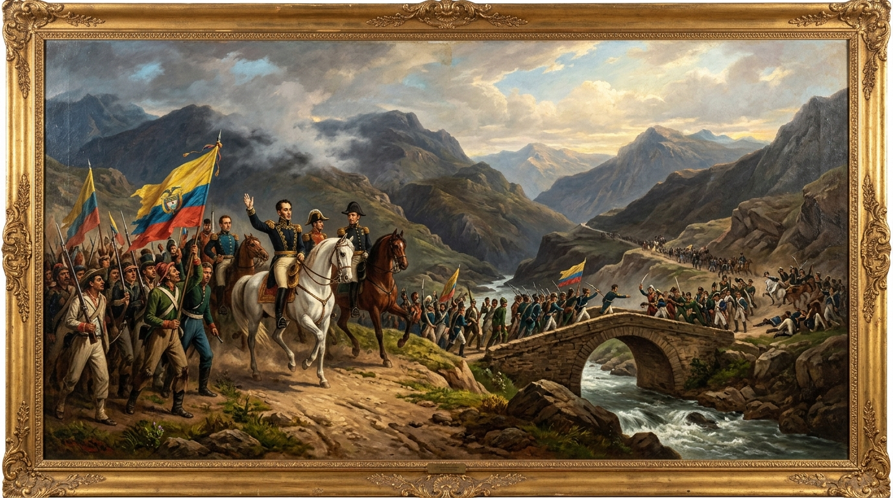

La Forja de la República:
Constituciones, Fuego & Soberanía
Ochenta y cuatro años de audacia política, guerras fratricidas y ensayos institucionales que oscilaron entre el federalismo radical de nueve soberanías y el centralismo confesional de Núñez y Caro. Del colapso de la Gran Colombia a las trincheras calcinadas de Palonegro y la trágica pérdida del istmo de Panamá.

El Vaivén Constitucional (1819 – 1886)
Colombia no nació bajo una sola ley, sino bajo el pulso encarnizado de dos visiones irreconciliables: la autonomía de las provincias soberanas contra la espada unificadora del poder central. Explora las cartas magnas que cambiaron el nombre, la fe y el destino territorial del país.
La Unión Continental de la Gran Colombia
Redactada en el Templo Histórico de Villa del Rosario de Cúcuta, proclamó el nacimiento formal de la República de Colombia, integrando las intendencias de la Nueva Granada, Venezuela y posteriormente Quito y Guayaquil bajo el liderazgo de Simón Bolívar y Francisco de Paula Santander.
Estableció un sistema centralista con un congreso bicameral y sentó las bases para el desmonte de las instituciones virreinales con la pionera Ley de Libertad de Vientres (manumisión de los hijos de esclavizados al cumplir los 18 años). Sin embargo, las enormes distancias territoriales, la ruina fiscal tras la gesta libertadora y las pugnas entre el mando militar bolivariano y los civilistas santanderistas condujeron a la disolución irrevocable de la unión en 1830.
El Repliegue Republicano y el Mandato de la Ley
Tras la separación definitiva de Venezuela (dirigida por José Antonio Páez) y de Ecuador (liderado por Juan José Flores), las provincias centrales se reorganizaron bajo la presidencia del General Francisco de Paula Santander. Esta carta consagró el principio de supremacía jurídica y división estricta de poderes: "las armas os han dado la independencia, las leyes os darán la libertad".
Redujo sustancialmente el poder del Ejecutivo para evitar el fantasma de la dictadura militar vitalicia bolivariana, otorgó mayor margen fiscal a las provincias y fortaleció el sistema de educación pública mediante colegios provinciales laicos y escuelas santanderinas.
El Primer Ensayo Federativo de Mariano Ospina Rodríguez
Bajo el gobierno del conservador Mariano Ospina Rodríguez, el país reconoció la irreprimible autonomía de sus regiones y formalizó la creación de ocho Estados Federados: Antioquia, Bolívar, Boyacá, Cauca, Cundinamarca, Magdalena, Panamá y Santander.
A pesar de ser una constitución conservadora en materia religiosa, otorgó una inmensa autonomía legislativa a los estados federados. No obstante, las leyes electorales y presupuestales dictadas en 1859 por el gobierno central de Bogotá provocaron la rebelión armada del presidente del Estado del Cauca, Tomás Cipriano de Mosquera, dando inicio a la guerra civil de 1860.
El Olimpo Radical de Rionegro: Federalismo Extremo
Fruto de la victoria de Tomás Cipriano de Mosquera en la guerra civil de 1860, la Convención de Rionegro (Antioquia) congregó a los pensadores liberales más doctrinarios del continente (Salvador Camacho Roldán, Manuel Murillo Toro, Eustorgio Salgar). Proclamó una federación de 9 Estados Soberanos, cada uno con constitución, ejército, correos y régimen aduanero propio.
Consagró libertades civiles inauditas en la época: libertad absoluta de prensa sin responsabilidad previa, libre comercio e importación de armas y municiones, abolición de la pena de muerte, laicismo escolar obligatorio y la desamortización de bienes de manos muertas (expropiación de las tierras del clero católico). El escritor francés Víctor Hugo la calificó asombrado como "una constitución hecha para ángeles, no para hombres".
La Regeneración de Núñez y Caro: "Una Nación, un Dios, una Ley"
El caos de las continuas guerras interprovinciales y la debilidad del gobierno federal llevaron al liberal independiente Rafael Núñez a pactar con el Partido Conservador bajo la consigna: "Regeneración administrativa fundamental o catástrofe". Tras aplastar la rebelión radical de 1885, Núñez declaró: "La Constitución de 1863 ha dejado de existir".
Redactada por el humanista y gramático Miguel Antonio Caro, la Constitución de 1886 abolió la soberanía de los estados, transformándolos en departamentos subordinados al poder presidencial en Bogotá. Restauró el poder de la Iglesia Católica mediante el histórico Concordato de 1887 (delegándole la educación y el registro civil), creó el Banco Nacional emisor del papel moneda y otorgó al Presidente facultades extraordinarias en tiempos de turbación (Artículo 121). Tuvo una vigencia titánica de 105 años, hasta la Constitución de 1991.
Las 9 Guerras Civiles Nacionales (1839 – 1895)
Más de medio centenar de asonadas locales y 9 confrontaciones que involucraron a la totalidad del territorio patrio. Caudillismos terratenientes, disputas confesionales por las almas de los niños en las escuelas y odios sectarios tiñeron los campos del siglo XIX. Haz clic en cada conflicto para abrir el expediente analítico.
Guerra de los Supremos
Detonada por la supresión de cuatro conventos menores en Pasto decretada por el Congreso para financiar escuelas públicas. Caudillos regionales ("Los Supremos") se levantaron contra el gobierno central de José Ignacio de Márquez.
La Reacción Conservadora de 1851
Insurrección terrateniente en el Cauca y Antioquia contra las reformas radicales de José Hilario López: la abolición absoluta de la esclavitud, la expulsión de la Compañía de Jesús y la disolución de los resguardos indígenas.
El Golpe de Melo y los Artesanos
El General José María Melo asume el poder mediante un golpe militar respaldado por las Sociedades Democráticas de artesanos de Bogotá, resistiendo las políticas librecambistas que arruinaban los telares y talleres criollos.
La Rebelión Triunfante de Mosquera
La única guerra civil en la historia de Colombia donde un bando insurrecto derrocó victoriosamente al gobierno central. Tomás Cipriano de Mosquera se alzó en el Cauca contra Mariano Ospina Rodríguez, tomó Bogotá y fundó el Olimpo Radical.
La Guerra de las Escuelas
Rebelión conservadora provocada por la aplicación del Decreto Orgánico de Instrucción Pública de 1870, que decretaba la educación primaria como laica, gratuita y obligatoria, arrebatando a la Iglesia el control dogmático del aula.
El Derrumbe del Radicalismo
Los liberales radicales se levantaron en Santander contra el presidente Rafael Núñez por sus políticas proteccionistas y su acercamiento a la Iglesia. La victoria de las tropas leales a Núñez selló la muerte de la Constitución de 1863 y dio paso a la Carta de 1886.
La Rebelión Liberal contra Caro
Alzamiento liberal liderado por Sixto Durán en Bogotá contra el régimen hegemónico y la censura de prensa de Miguel Antonio Caro. Fue sofocada en apenas dos meses por el general Rafael Reyes en la sangrienta Batalla de Enciso.
La Guerra de los Mil Días:
El Apocalipsis Fratricida
El conflicto civil más devastador en los anales colombianos. La intransigencia del gobierno conservador de Manuel Antonio Sanclemente ante las demandas de reforma electoral y apertura de los liberales provocó un alzamiento en masa liderado por Paulo Emilio Villar en Santander.
La Carnicería de Palonegro (11 al 25 de mayo de 1900)
Quince días incesantes de combate cuerpo a cuerpo bajo el sol canicular cerca de Bucaramanga. Trincheras inundadas de sangre, bayonetas melladas y más de 4.000 cadáveres pudriéndose al aire libre sin sepultura. Palonegro quebró para siempre la fuerza convencional del ejército liberal.
Tras Palonegro, el conflicto degeneró en una enconada guerra de guerrillas encabezada por Rafael Uribe Uribe en el Magdalena y los Andes centrales, y el general Benjamín Herrera en el istmo de Panamá.
El Tratado del Acorazado USS Wisconsin
Agotadas las arcas del país, con una hiperinflación que convirtió el papel moneda en basura y con el ejército liberal atrincherado en Panamá, se firmó la capitulación a bordo del buque de guerra norteamericano USS Wisconsin anclado en la bahía de Panamá.
El general liberal Benjamín Herrera y el conservador Víctor M. Salazar sellaron la paz bajo la mirada y tutela de los almirantes estadounidenses. El país quedaba en la ruina moral y fiscal, indefenso ante la inmediata amputación territorial del año siguiente.
La Pérdida de Panamá: La Amputación Soberana
El colapso de la empresa francesa de Ferdinand de Lesseps, la indiferencia del gobierno central en Bogotá hacia las necesidades del istmo y la voracidad geopolítica del presidente estadounidense Theodore Roosevelt convergieron en la mayor herida territorial de Colombia.
El Duelo de una República Mutilada
La noticia tardó semanas en llegar a la capital por la precariedad de las comunicaciones telegráficas a través de la selva y el mar. Cuando Bogotá conoció la pérdida del departamento más codiciado del planeta, el estupor ciudadano fue inmenso.
El general Rafael Reyes fue enviado en misión de salvamento a Washington a bordo de vapores, pero fue recibido con frialdad absoluta: el gobierno estadounidense ya había reconocido a la nueva república panameña. El escudo nacional conservó en su franja inferior el istmo interoceánico como una amarga silueta de la geografía perdida.
El Territorio Descubierto y los Hombres Libres
A la par de las disputas de fusil y papel sellado, el siglo XIX presenció la mayor hazaña científica y artística del continente y la definitiva liberación de los hijos de la diáspora africana.

La Comisión Corográfica de Agustín Codazzi (1850 – 1859)
Diez grandes expediciones cruzando páramos helados, cañones y selvas vírgenes a lomo de mula. El militar e ingeniero italiano Agustín Codazzi, junto a los pintores Carmelo Fernández, Henry Price y Manuel María Paz, dibujó y cartografió por primera vez las provincias de la Nueva Granada.
La Abolición Definitiva de la Esclavitud (1851 – 1852)
El 21 de mayo de 1851, el presidente José Hilario López promulgó la ley que declaró libres a todos los esclavizados a partir del 1 de enero de 1852. Puso fin a tres siglos de ignominia colonial, detonando la guerra civil del 51 liderada por los amos mineros del Cauca y Antioquia.
Fundación del Archivo Nacional por Vergara y Vergara
En 1868, don José María Vergara y Vergara emprendió la titánica tarea de rescatar, despolvar y catalogar los miles de legajos manuscritos coloniales y republicanos dispersos en conventos y despachos ministeriales, fundando el actual Archivo General de la Nación.